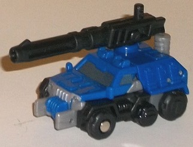
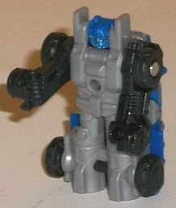
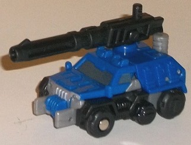
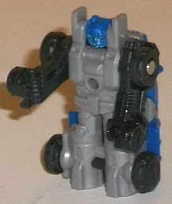
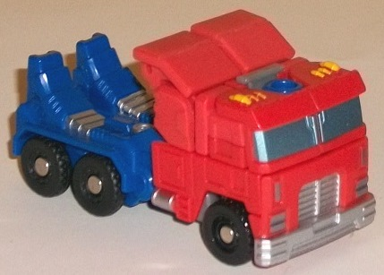
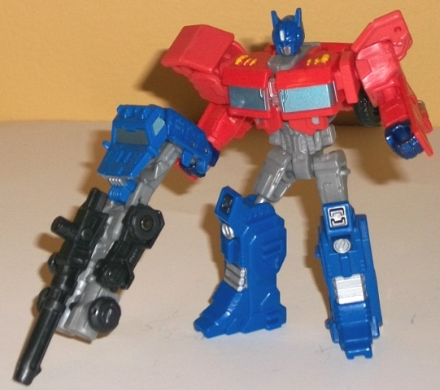

 
Difficulty of Transformations : Very Easy
Color Scheme : Dark blue, black, moderately light milky gray, and some light metallic silvery blue
Individual Rating : 5.1
Allegiances
: Autobot
Size
: Legends 2-pack
 Autobot
Roller
Autobot
Roller


Difficulty of Transformations
: Very
Easy
Color Scheme
: Dark blue, black,
moderately light milky gray, and some light metallic silvery blue
Individual Rating
: 5.1
Roller is a tiny little
guy, about Micromaster-sized, and forms a sort of "little buddy" for the
(relatively) larger Optimus Prime figure in this set. In vehicle mode,
Roller is a six-wheeled heavy duty SUV-like vehicle. It's similar in appearance--but
not identical to--
G1 Roller
, who was a bit
of a smaller model with no top to the vehicle. The blue color scheme is
right-on when it comes to accuracy, and there's a bit of black and light
gray to help vary things up a bit. It's not the most attractive color scheme
in the world, but it gets the job done. As far as paint apps, Roller obviously
isn't the focus here (nor should he be, really)-- the windows are painted
(and the face in robot mode), but nothing else. There's a port on top of
this mode-- amongst a surprising amount of "tech" mold detailing-- that
can fit most Generations weapons pegs, including the gun that comes with
Optimus, in case you want to add a little firepower to the guy.
Roller has a weapon
mode (see Optimus' robot pic below), which involves partially unfolding
his robot mode out from the bottom of his vehicle mode. The robot arms
are rather obvious, but the head is hidden, and that's the important bit.
It's a bit long proportionally for figures in Optimus' scale, but it looks
okay enough for a tertiary mode-- the bottom of the robot mode make for
decent dual barrels for a gun, and you can plug in Optimus' gun via its
small peg into the center of Roller's robot chest, which gives this mode
a third barrel. The handle on the end is your standard port that is usable
by nearly all Generations figures, though, so other, larger characters
can also wield Roller if you so desire.
Roller's transformation
to robot mode is anything but-- you literally just stand his vehicle mode
up on its back end, and voila. This makes him rather overly square and
stiff here, and I wish the mold detailing on his chest had a bit of blue
paint, to make things a bit more visually interesting. However, for the
very small size, it does the job decently enough. (This said, the details
on his tiny head are so small it's hard to make out what exactly his head
design is supposed to look like, particularly around the mouth.) Roller's
shoulders can move forwards, but that's it-- no other articulation on this
little guy. His hands can hold Cyberverse-scaled weapons, though, and Optimus'
gun as well, by its other, tinier, peg.
Generations Roller is
a decent enough buddy, and for the incredibly small size doesn't look terrible
in either of his modes. However, he's not going to wow anybody, particularly
given how little of a "transformation" he actually has when going from
vehicle to robot mode, and his very square proportions and lack of significant
articulation. He's an okay accessory, but certainly shouldn't be the reason
you buy this set.
 Optimus
Prime
Optimus
Prime


Difficulty of Transformation
: Easy
Color Scheme:
Dark blue, pale red,
red, moderately light gray, and some silver, yellow, black, and light metallic
silvery blue
Individual Rating
: 8.8
Optimus Prime's vehicle
mode, for the most part, isn't something we haven't seen before (double
negative, I know). He's a red-and-blue truck cab, with a bit of silver
on the bumper, grill, and a few other details. His windows are the typical
color of painted windows-- a light, shiny silver blue, and thankfully his
top lights are painted a nice shade of yellow, which goes well with the
red surrounding it. The color scheme is what it is-- you should know pretty
well by now whether you like it or not. I will say that the red plastic
is actually two slightly different shades-- one is a more straightforward
red, while the other is rather pale, like it's been washed out a bit. I'm
not sure why Hasbro decided to use two ever-so-slightly different shades
of red on the figure, but I'm not a fan of it. Just straight red would've
looked a bit better. The mold detailing is quite well-done on this toy,
having a bit more detailing than your average G1 design, what with the
number of tech-y bits near the back end and all the (unpainted) detailing
on the sides with the windows and whatnot-- but it certainly stops far
short of being movie-esque in its detailing. As with many Optimus Prime
toys, it's rather obvious that the back end forms Prime's robot legs--
all the more obvious because of the fact that Optimus' feet don't fold
down or anything in this mode. Optimus' gun accessory can plug into the
top of this mode, but if you don't do that, then the dark blue plastic
around that port makes it stick out some (it's the back of Optimus' head).
Other than these two kibble issues (one of them very minor), this mode
looks pretty nice, and everything tabs into place well and is pretty well-proportioned.
There's hints of it
in his truck mode with the raised middle section, but in robot mode it
becomes more obvious that this design is intended to be what Optimus Prime
has looked like throughout most of the IDW comics run, with the busier
shouders, Autobot symbol poking out in between his slightly-split chest,
and general detailing. His head sculpt is also well-done, and has the IDW-esque
longer antennae on the sides. All necessary details are painted in this
mode-- his hands, his eyes and faceplate, and some detailing on his lower
legs, so I've no issues about his color placement and paint apps here.
The proportions are very good, particularly for a toy of this size-- really,
the shoulders are a bit overly wide, but other than that he's pretty perfect
in that respect. Just as with his truck mode, he has a few minor kibble
issues, the biggest of which is the truck front, which is now on his upper
back. It stays out of the way of movement, and I'm glad it folds up so
that it doesn't hang down behind his skinnier stomach, but it's still fairly
obvious. The pieces on his shoulders can also fold up and out, though I'm
not sure why; they aren't required to do so for transformation, and don't
contribute anything to either mode. Another issue that Prime has is that
nothing locks his chest in place; when playing with him, it's quite likely
his windshield-chest halves will move around a bit, partially obscuring
the Autobot symbol or uncovering too much of the middle section of his
chest-- honestly, this right here is probably my biggest issue with this
toy, as it can get mildly annoying. For articulation, Optimus can move
at the neck, shoulders (at two points), elbows, hips and knees-- and most
of these are on ball joints, so given his good balance and fairly large
feet, this means you can get some excellent poses out of him, particularly
for this size class.
Generations "Legends"
Optimus Prime is a pretty nice take on the IDW design for the Autobot leader,
with great proportions overall in both modes and a good amount of both
mold and paint detailing, as well as great articulation for the size. He
does have a few minor kibble problems in both modes, and I wish his robot
chest could lock into place, but these caveats aside, he's certainly worth
picking up if you're an Optimus Prime fan or an IDW Transformers-verse
fan.
The Legends Optimus Prime & Roller set is one of the better overall sets for the Generations "small Scout-class toy and Micromaster partner" series of Legends 2-packs. Roller isn't anything to write home about, but hey, he finally has a robot mode, and his weapon mode adds some more playability to Optimus, who is largely a superb toy for the size class with only a few relatively minor issues. Recommended if you like the size class.
Reviews by Beastbot